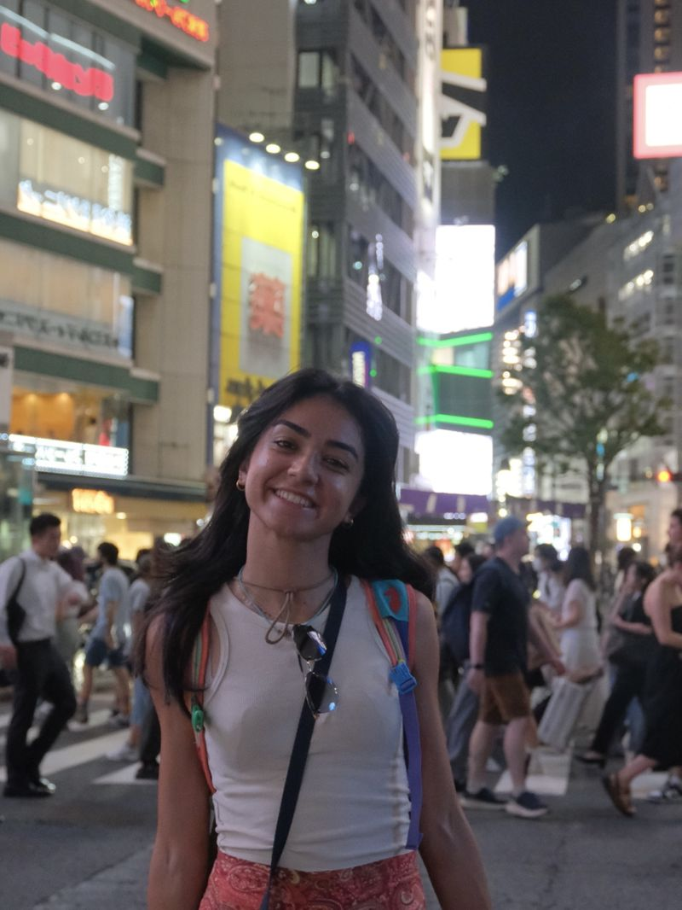

Neslinur Kalkan.
Engineer working where data, machine learning and the outdoors meet — from Redshift pipelines to GPS tracks.
Analytical by training.
Curious by nature.
Double-major student in Electronics and Communication Engineering and Mathematical Engineering at Istanbul Technical University, combining analytical thinking with creativity from my background in sports and arts. Experienced in data analysis, optimization, and applied machine learning, driven to apply theoretical knowledge to real-world industry problems.
As a former national orienteering athlete who competed at JWOC 2022 in Portugal, I bring the same precision and problem-solving mindset to engineering challenges. Currently exploring the intersection of GPS technology, data science, and real-world applications.
Leadership · scholarship · character · physical vigor

Languages & analysis
Tools & technologies
Building for the web
Where theory met
real systems.
Data Science Intern
- Conducted exploratory data analysis and RFM segmentation on car-rental records using Python
- Queried and managed large datasets on Amazon AWS Redshift (SQL)
- Generated actionable insights for operations—identifying high-revenue routes and pricing strategies
Engineer Intern
- Assisted in the design and analysis of guidance systems for missile applications
- Supported the modeling and simulation of guidance algorithms using MATLAB/Simulink
- Observed integration workflows between guidance, control, and navigation subsystems
Laboratory Intern
- Conducting research on driving systems, vehicle positioning, and GPS improvement
- Developing a project focused on optimizing rail transportation technologies
- Utilizing advanced localization and navigation techniques to enhance system efficiency
Engineer Intern
- Gained hands-on experience in configuring I/O functionalities in MCUs at C++ level
- Implemented precise timing mechanisms within UART communication protocols
- Developed strong skills in embedded programming and data retrieval
Certifications
& achievements.
Global Scholars Fellowship
Recognized for leadership, scholarship, character, and physical vigor
Artificial Intelligence Expertise Program
Specialized training in AI innovation and applications
Supervised Machine Learning: Regression and Classification
Linear & logistic regression, regularization, gradient descent
CAMPus Engineering Program
Learning and Development Camp for Engineers
Control Design Onramp with Simulink
Control system design and simulation
Simulink Onramp
Model-based design fundamentals
Level 1 Orienteering Coach
Certified orienteering instructor
Licensed Athlete
National level competitor
Every route is
a dataset.
From a first training run to a world championship start line.
Routes
Activities with a GPS track, synced from Strava
Distance
Running, hiking and orienteering, all on foot
Countries
Travel, races and an exchange semester in Seoul
Sports
Run · hike · orienteer · dive · lift
JWOC
Junior World Orienteering Championships, Portugal
Achievements
Orienteering
Competed at JWOC 2022 in Portugal, Turkish National Champion, combining physical endurance with navigation skills and GPS technology understanding.
İTÜ Orienteering Team
Served as Chairperson (2022–2023) and Audit Board Member (2024–2025), leading the team to national championships.
Nature sports
Active in running, scuba diving, camping, and various outdoor activities. Passionate about exploring nature through sports.